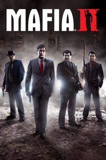

Mafia II is an action-adventure video game developed by 2K Czech and published by 2K Games. It was released in August 2010 for the PlayStation 3, Xbox 360, and Microsoft Windows; Mafia II: Director's Cut was released by Feral Interactive in December 2011, an edition consisting of the game's downloadable content.[3] The game is the sequel to 2002's Mafia[4] and the second game in the Mafia series. Set within the fictional Empire Bay (based on New York City, as well as aspects of Chicago, San Francisco, Los Angeles, Boston and Detroit) in 1945 and later 1951, the game's storyline follows Sicillian mobster and war veteran Vito Scaletta as he becomes involved in a power struggle among the Mafia crime families of the city while attempting to pay back his father's debts and secure a better lifestyle for himself.
The game is played from a third-person perspective and its world is navigated on-foot or by vehicle. The player character's criminal activities may incite a response from law enforcement agencies, measured by a "wanted" system that governs the aggression of their response. Development began in 2003, soon after the release of the first Mafia game. At release, Mafia II received generally positive reviews from critics, with praise particularly directed at the story, though the linear open world design was criticized. Its successor, Mafia III, was released in 2016. A remastered version of the game, entitled Mafia II: Definitive Edition, was developed by Hangar 13 and released by 2K on 19 May 2020.